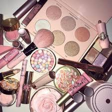

Night Out Makeup Tutorial
Steps:
- fill in brows
- do eyeshadow
- apply primer
- apply foundation and concealer
- contour
- bake and highlight
- apply lipstick
- set face
Products Used:
- NYX brow pomade
- Morphe Concealer
- Jaclyn Hill x Morphe Palette
- Certifeye Glitter
- YSL liner
- Fenty Primer
- Benefit Porefessional
- Mac Studio fix fluid
- Maybelline Fit Me matte poreless
- Nars radiant creamy concealer
- Cover FX concealer
- RCMA translucent powder
- Mac mineralise skin finish
- NYX foundation stick
- Pur contour diaries
- Nikkie x ofra glow goals highlight
- NYX suede lip liner
- Dose of colors liquid lipstick
- LA splash lipgloss
- Urban decay all nighter setting spray
